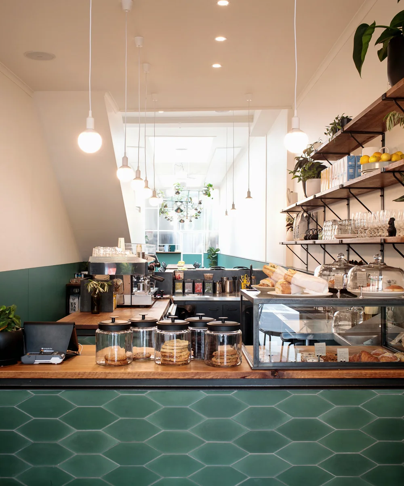
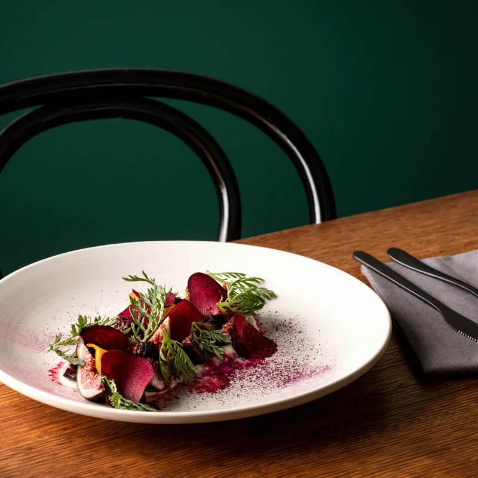
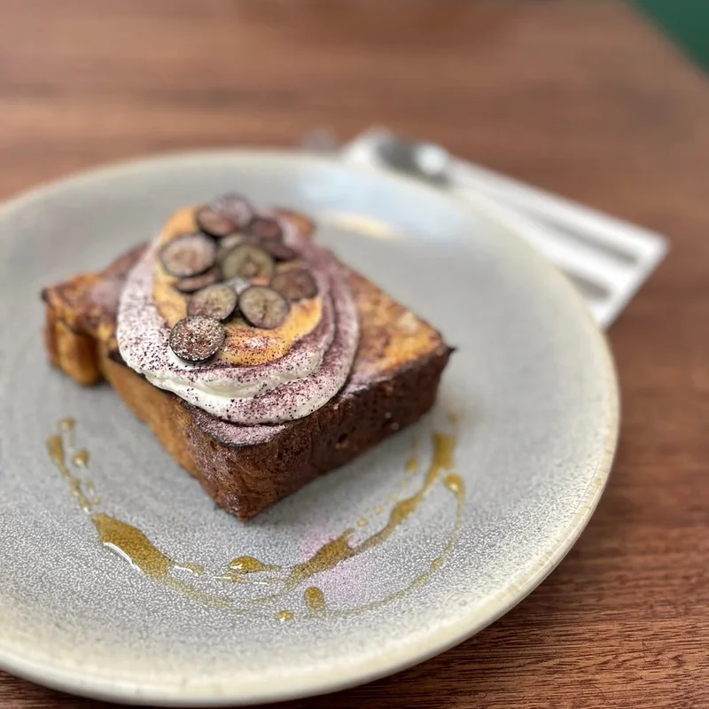
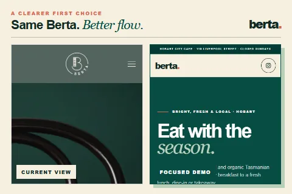

Breakfast · weekdays from 7am
Start bright.
House-made English muffins, avocado toast, buttermilk hotcakes, shakshuka and the morning’s good coffee.
Open breakfast menuA city cafe shaped by local and organic Tasmanian producers — from an early breakfast to a fresh lunch, dine-in or takeaway.

What shapes the plate
Berta’s menu moves with its network of local and organic Tasmanian producers. That means colourful breakfasts, generous lunches and small details made in-house.
Explore the menus

“Fresh, local and organic ingredients drive what comes next.”
The Berta rhythm
Local and organic suppliers shape a menu that can change naturally — keeping breakfast, lunch and takeaway connected to what is fresh.
Plan your visit

Seasonal food, opening times and the booking path are brought into one calm, mobile-friendly flow.